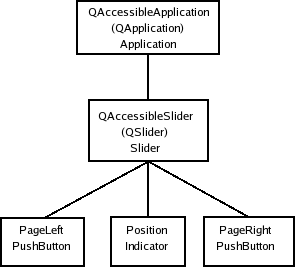

Accessibility for QWidget Applications
Introduction
We will focus on the Qt accessibility interface QAccessibleInterface and how to make applications accessible.
Accessibility in QWidget based applications
When we communicate with the assistive technologies, we need to describe Qt's user interface in a way that they can understand. Qt applications use QAccessibleInterface to expose information about the individual UI elements. Currently, Qt provides support for its widgets and widget parts, e.g., slider handles, but the interface could also be implemented for any QObject if necessary. QAccessible contains enums that describe the UI. We will examine the enums in the course of this document.
The structure of the UI is represented as a tree of QAccessibleInterface subclasses. This is often a mirror of the hierarchy of QWidgets that make up the UI of the application.
Servers notify clients through updateAccessibility() about changes in objects by sending events, and the clients register to receive the events. The available events are defined by the QAccessible::Event enum. The clients may then query for the object that generated the event through QAccessible::queryAccessibleInterface().
The members and enums in QAccessible are used to describe accessible objects:
- Role: Describes the role the object fills in the user interface, e.g., if it is a window, a text edit, or a cell in a table.
- Relation: Describes the relationship between objects in the object hierarchy.
- State: The objects can be in a number of different states. Examples of states are whether the object is disabled, if it has focus, or if it provides a pop-up menu.
The clients also have some possibilities to get the content of objects, e.g., a button's text; the object provides strings defined by the QAccessible::Text enum, that give information about content.
The Accessible Object Tree
As mentioned, a tree structure is built from the accessible objects of an application. By navigating through the tree, the clients can access all elements in the UI. Object relations give clients information about the UI. For instance, a slider handle is a child of the slider to which it belongs. QAccessible::Relation describes the various relationships the clients can ask objects for.
Note that there are no direct mapping between the Qt QObject tree and the accessible object tree. For instance, scroll bar handles are accessible objects but are not widgets or objects in Qt.
AT-Clients have access to the accessibility object tree through the root object in the tree, which is the QApplication. They can navigate the tree with the QAccessibleInterface::parent(), QAccessibleInterface::childCount() and QAccessibleInterface::child() functions.
Qt provides accessible interfaces for its widgets and for Qt Quick Controls. Interfaces for any QObject subclass can be requested through QAccessible::queryInterface(). A default implementation is provided if a more specialized interface is not defined. An AT-Client cannot acquire an interface for accessible objects that do not have an equivalent QObject, e.g., scroll bar handles, but they appear as normal objects through interfaces of parent accessible objects, e.g., you can query their relationships with QAccessibleInterface::relations().
To illustrate, we present an image of an accessible object tree. Beneath the tree is a table with examples of object relationships.

The labels in top-down order are: the QAccessibleInterface class name, the widget for which an interface is provided, and the Role of the object. The Position, PageLeft and PageRight correspond to the slider handle, the slider groove left and the slider groove right, respectively. These accessible objects do not have an equivalent QObject.
| Source Object | Target Object | Relation |
|---|---|---|
| Slider | Indicator | Controller |
| Indicator | Slider | Controlled |
| Slider | Application | Ancestor |
| Application | Slider | Child |
| PushButton | Indicator | Sibling |
The Static QAccessible Functions
The accessibility is managed by QAccessible's static functions, which we will examine shortly. They produce QAccessible interfaces, build the object tree, and initiate the connection with MSAA or the other platform specific technologies. If you are only interested in learning how to make your application accessible, you can safely skip over this section to Implementing Accessibility.
The communication between clients and the server is initiated when setRootObject() is called. This is done when the QApplication instance is instantiated and you should not have to do this yourself.
When a QObject calls updateAccessibility(), clients that are listening to events are notified of the change. The function is used to post events to the assistive technology, and accessible events are posted by updateAccessibility().
queryAccessibleInterface() returns accessible interfaces for QObjects. All widgets in Qt provide interfaces; if you need interfaces to control the behavior of other QObject subclasses, you must implement the interfaces yourself, although the QAccessibleObject convenience class implements parts of the functionality for you.
The factory that produces accessibility interfaces for QObjects is a function of type QAccessible::InterfaceFactory. It is possible to have several factories installed. The last factory installed will be the first to be asked for interfaces. queryAccessibleInterface() uses the factories to create interfaces for QObjects. Normally, you need not be concerned about factories because you can implement plugins that produce interfaces. We will give examples of both approaches later.
Implementing Accessibility
To provide accessibility support for a widget or other user interface element, you need to implement the QAccessibleInterface and distribute it in a QAccessiblePlugin. It is also possible to compile the interface into the application and provide a QAccessible::InterfaceFactory for it. The factory can be used if you link statically or do not want the added complexity of plugins. This can be an advantage if you, for instance, are delivering a 3-rd party library.
All widgets and other user interface elements should have interfaces and plugins. If you want your application to support accessibility, you will need to consider the following:
- Qt already implements accessibility for its own widgets. We therefore recommend that you use Qt widgets where possible.
- A QAccessibleInterface needs to be implemented for each element that you want to make available to accessibility clients.
- You need to send accessibility events from the custom user interface elements that you implement.
In general, it is recommended that you are somewhat familiar with MSAA, which Qt's accessibility support originally was built for. You should also study the enum values of QAccessible, which describe the roles, actions, relationships, and events that you need to consider.
Note that you can examine how Qt's widgets implement their accessibility. One major problem with the MSAA standard is that interfaces are often implemented in an inconsistent way. This makes life difficult for clients and often leads to guesswork on object functionality.
It is possible to implement interfaces by inheriting QAccessibleInterface and implementing its pure virtual functions. In practice, however, it is usually preferable to inherit QAccessibleObject or QAccessibleWidget, which implement part of the functionality for you. In the next section, we will see an example of implementing accessibility for a widget by inheriting the QAccessibleWidget class.
The QAccessibleObject and QAccessibleWidget Convenience Classes
When implementing an accessibility interface for widgets, one would as a rule inherit QAccessibleWidget, which is a convenience class for widgets. Another available convenience class, which is inherited by QAccessibleWidget, is the QAccessibleObject, which implements part of the interface for QObjects.
The QAccessibleWidget provides the following functionality:
- It handles the navigation of the tree and hit testing of the objects.
- It handles events, roles, and actions that are common for all QWidgets.
- It handles action and methods that can be performed on all widgets.
- It calculates bounding rectangles with rect().
- It gives text() strings that are appropriate for a generic widget.
- It sets the states that are common for all widgets.
QAccessibleWidget Example
Instead of creating a custom widget and implementing an interface for it, we will show how accessibility is implemented for one of Qt's standard widgets: QSlider. The accessible interface, QAccessibleSlider, inherits from QAccessibleAbstractSlider, which in turn inherits QAccessibleWidget. You do not need to examine the QAccessibleAbstractSlider class to read this section. If you want to take a look, the code for all of Qt's accessible interfaces are found in qtbase/src/widgets/accessible. Here is the QAccessibleSlider's constructor:
QAccessibleSlider::QAccessibleSlider(QWidget *w) : QAccessibleAbstractSlider(w) { Q_ASSERT(slider()); addControllingSignal(QLatin1String("valueChanged(int)")); }
The slider is a complex control that functions as a Controller for its accessible children. This relationship must be known by the interface (for parent(), child() and relations()). This can be done using a controlling signal, which is a mechanism provided by QAccessibleWidget. We do this in the constructor:
The choice of signal shown is not important; the same principles apply to all signals that are declared in this way. Note that we use QLatin1String to ensure that the signal name is correctly specified.
When an accessible object is changed in a way that users need to know about, it notifies clients of the change by sending them an event via the accessible interface. This is how QSlider calls updateAccessibility() to indicate that its value has changed:
void QAbstractSlider::setValue(int value) ... QAccessibleValueChangeEvent event(this, d->value); QAccessible::updateAccessibility(&event); ... }
Note that the call is made after the value of the slider has changed because clients may query the new value immediately after receiving the event.
The interface must be able to calculate bounding rectangles of itself and any children that do not provide an interface of their own. The QAccessibleSlider has three such children identified by the private enum, SliderElements, which has the following values: PageLeft (the rectangle on the left hand side of the slider handle), PageRight (the rectangle on the right hand side of the handle), and Position (the slider handle). Here is the implementation of rect():
QRect QAccessibleSlider::rect(int child) const { ... switch (child) { case PageLeft: if (slider()->orientation() == Qt::Vertical) rect = QRect(0, 0, slider()->width(), srect.y()); else rect = QRect(0, 0, srect.x(), slider()->height()); break; case Position: rect = srect; break; case PageRight: if (slider()->orientation() == Qt::Vertical) rect = QRect(0, srect.y() + srect.height(), slider()->width(), slider()->height()- srect.y() - srect.height()); else rect = QRect(srect.x() + srect.width(), 0, slider()->width() - srect.x() - srect.width(), slider()->height()); break; default: return QAccessibleAbstractSlider::rect(child); } ...
The first part of the function, which we have omitted, uses the current style to calculate the slider handle's bounding rectangle; it is stored in srect. Notice that child 0, covered in the default case in the above code, is the slider itself, so we can simply return the QSlider bounding rectangle obtained from the superclass, which is effectively the value obtained from QAccessibleWidget::rect().
QPoint tp = slider()->mapToGlobal(QPoint(0,0));
return QRect(tp.x() + rect.x(), tp.y() + rect.y(), rect.width(), rect.height());
}
Before the rectangle is returned it must be mapped to screen coordinates.
The QAccessibleSlider must reimplement QAccessibleInterface::childCount() since it manages children without interfaces.
The text() function returns the QAccessible::Text strings for the slider:
QString QAccessibleSlider::text(Text t, int child) const { if (!slider()->isVisible()) return QString(); switch (t) { case Value: if (!child || child == 2) return QString::number(slider()->value()); return QString(); case Name: switch (child) { case PageLeft: return slider()->orientation() == Qt::Horizontal ? QSlider::tr("Page left") : QSlider::tr("Page up"); case Position: return QSlider::tr("Position"); case PageRight: return slider()->orientation() == Qt::Horizontal ? QSlider::tr("Page right") : QSlider::tr("Page down"); } break; default: break; } return QAccessibleAbstractSlider::text(t, child); }
The slider() function returns a pointer to the interface's QSlider. Some values are left for the superclass's implementation. Not all values are appropriate for all accessible objects, as you can see for QAccessible::Value case. You should just return an empty string for those values where no relevant text can be provided.
The implementation of the role() function is straightforward:
QAccessible::Role QAccessibleSlider::role(int child) const { switch (child) { case PageLeft: case PageRight: return PushButton; case Position: return Indicator; default: return Slider; } }
The role function should be reimplemented by all objects and describes the role of themselves and the children that do not provide accessible interfaces of their own.
Next, the accessible interface needs to return the states that the slider can be in. We look at parts of the state() implementation to show how just a few of the states are handled:
QAccessible::State QAccessibleSlider::state(int child) const { const State parentState = QAccessibleAbstractSlider::state(0); ... switch (child) { case PageLeft: if (slider->value() <= slider->minimum()) state |= Unavailable; break; case PageRight: if (slider->value() >= slider->maximum()) state |= Unavailable; break; case Position: default: break; } return state; }
The superclass implementation of state(), uses the QAccessibleInterface::state() implementation. We simply need to disable the buttons if the slider is at its minimum or maximum.
We have now exposed the information we have about the slider to the clients. For the clients to be able to alter the slider - for example, to change its value - we must provide information about the actions that can be performed and perform them upon request. We discuss this in the next section.
Handling Action Requests from Clients
Applications can expose actions, which can be invoked by the client. In order to support actions in an object, inherit the QAccessibleActionInterface.
Interactive elements should expose functionality triggered by mouse interaction, for example. A button should, for example, implement a click action.
Setting the focus is another action that should be implemented for widgets that accept receive the focus.
You need to re-implement actionNames() to return a list of all actions that the object supports. This list should not be localized.
There are two functions that give information about the actions that must return localized strings: localizedActionName() and localizedActionDescription(). These functions can be used by the client to present the actions to the user. In general, the name should be concise and only consist of a single word, such as "press".
There is a list of standard action names and localizations available that should be used when the action fits. This makes it easier for clients to understand the semantics, and Qt will try to expose them correctly on the different platforms.
Of course the action also needs a way to be triggered. doAction() should invoke the action as advertised by name and description.
To see examples on how to implement actions and methods, you could examine the implementations for Qt's standard widgets such as QAccessiblePushButton.
Implementing Accessible Plugins
In this section we will explain the procedure of implementing accessible plugins for your interfaces. A plugin is a class stored in a shared library that can be loaded at run-time. It is convenient to distribute interfaces as plugins since they will only be loaded when required.
Creating an accessible plugin is achieved by inheriting QAccessiblePlugin, defining the supported class names in the plugin's JSON description and reimplementing create() from QAccessiblePlugin. The .pro file must be altered to use the plugin template, and the library containing the plugin must be placed on a path where Qt searches for accessible plugins.
We will go through the implementation of SliderPlugin, which is an accessible plugin that produces the QAccessibleSlider interface from the QAccessibleWidget Example. We start with the key() function:
QStringList SliderPlugin::keys() const { return QStringList() << QLatin1String("QSlider"); }
We simply need to return the class name of the single interface our plugin can create an accessible interface for. A plugin can support any number of classes; just add more class names to the string list. We move on to the create() function:
QAccessibleInterface *SliderPlugin::create(const QString &classname, QObject *object) { QAccessibleInterface *interface = 0; if (classname == QLatin1String("QSlider") && object && object->isWidgetType()) interface = new QAccessibleSlider(static_cast<QWidget *>(object)); return interface; }
We check whether the interface requested is for QSlider; if it is, we create and return an interface for it. Note that object will always be an instance of classname. You must return 0 if you do not support the class. updateAccessibility() checks with the available accessibility plugins until it finds one that does not return 0.
Finally, you need to include macros in the cpp file:
Q_OBJECT
Q_PLUGIN_METADATA(IID "org.qt-project.Qt.Examples.Accessibility.SliderPlugin" FILE "slider.json")
The Q_PLUGIN_METADATA macro exports the plugin in the SliderPlugin class into the acc_sliderplugin library. The first argument is the plugins IID and the second is an optional json file which holds metadata information for the plugin. For more information on plugins, you can consult the plugins overview document.
It does not matter if you need the plugin to be statically or dynamically linked with the application.
Implementing Interface Factories
If you do not want to provide plugins for your accessibility interfaces, you can use an interface factory (QAccessible::InterfaceFactory), which is the recommended way to provide accessible interfaces in a statically-linked application.
A factory is a function pointer for a function that takes the same parameters as QAccessiblePlugin's create() - a QString and a QObject. It also works the same way. You install the factory with the installFactory() function. We give an example of how to create a factory for the QAccessibleSlider interface:
QAccessibleInterface *sliderFactory(const QString &classname, QObject *object) { QAccessibleInterface *interface = 0; if (classname == QLatin1String("QSlider") && object && object->isWidgetType()) interface = new QAccessibleSlider(static_cast<QWidget *>(object)); return interface; } int main(int argc, char *argv[]) { QApplication app(argc, argv); QAccessible::installFactory(sliderFactory); ... }
Related Classes
Enables accessibility of QML items | |
Enums and static functions related to accessibility | |
Implements support for invocable actions in the interface | |
Implements support for objects with editable text | |
The base class for accessibility notifications | |
Defines an interface that exposes information about accessible objects | |
Implements parts of the QAccessibleInterface for QObjects | |
Abstract base class for plugins provinding accessibility information for user interface elements | |
Implements support for selection handling | |
Notfies the accessibility framework that the state of an object has changed | |
Implements support for the IAccessibleTable2 Cell interface | |
Implements support for the IAccessibleTable2 interface | |
Signifies a change in a table, list, or tree where cells are added or removed. If the change affected a number of rows, firstColumn and lastColumn will return -1. Likewise for columns, the row functions may return -1 | |
Notifies of cursor movements | |
Notifies of text being inserted | |
Implements support for text handling | |
Notifies of text being deleted | |
Signals a change in the text selection of an object | |
Notifies about text changes. This is for accessibles that support editable text such as line edits. This event occurs for example when a portion of selected text gets replaced by pasting a new text or in override mode of editors | |
Describes a change in value for an accessible object | |
Implements support for objects that manipulate a value | |
Implements the QAccessibleInterface for QWidgets |